01
We were figuring it out.
Two girls in first year, learning college, learning each other, and slowly turning “7.40?” into a very real part of the routine.
a tiny birthday website for Payal
You know the time. You know the story.
Now press the button and let me be sentimental for approximately five minutes.
before anything else...
tap the button if your phone refuses to understand birthday magic 😭
Now let's talk about the tiny friendship that started with a name I couldn't pronounce without asking twice.
three years of us, give or take a few questionable selfies
Not a grand, dramatic story. Just a collection of small things that quietly became very important.
I still remember you shyly trying to join the conversation, and me being... well, unnecessarily haughty. Then you said your name was Payoli, and I genuinely had to ask again. A very uncommon beginning for a very uncommon friendship.
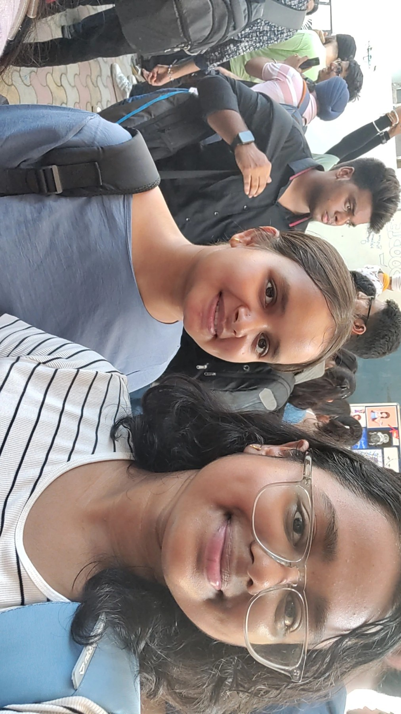
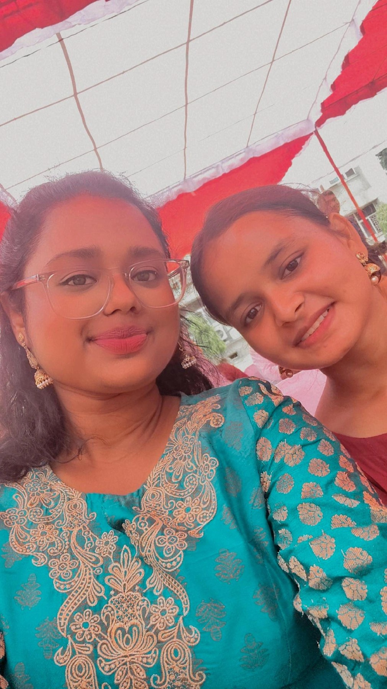
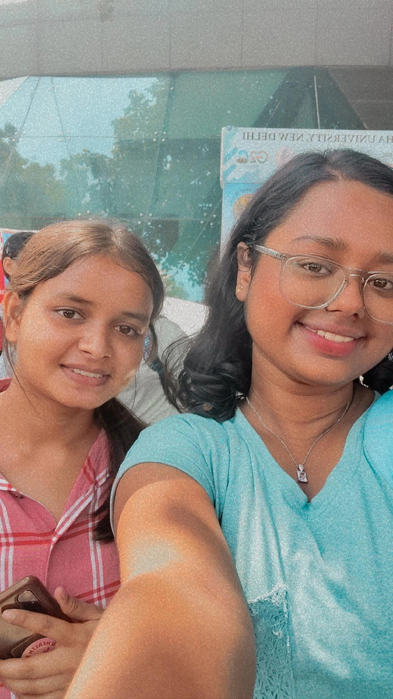
First there was coordinating when to reach college for freshers. Then it became “7.40 tomorrow?” before sleeping. Then 7:40 meant Subhash Nagar Metro Station, and somehow that tiny number became one of the coordinates of our college life.
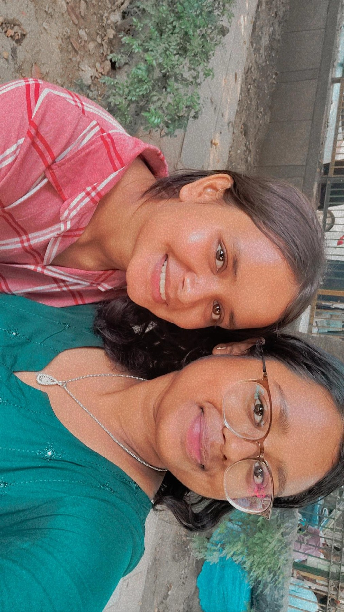
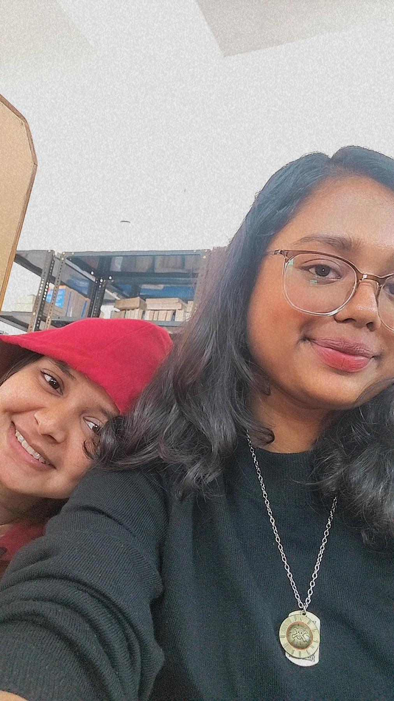
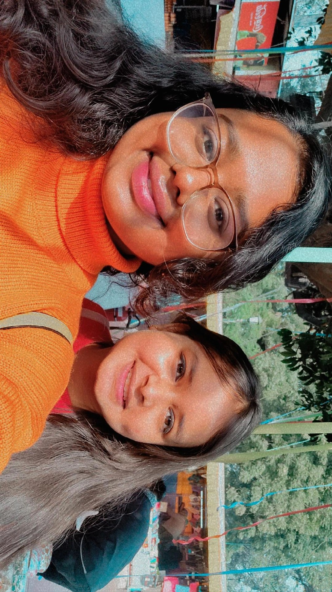
somewhere along the way
You saw the first tears I cried in college — over a certain guy, over academics, over all the things that felt enormous at the time.
We fought. We cried. We laughed. You took care of me when I was a mess, celebrated my grades like they were your own, and watched me become more confident.
And somewhere in all those ordinary days, you became someone I could confide in without thinking twice.
Because how could a Payal birthday website exist without our favourite movie making an appearance? And no, we're not Bunny and Naina — please, we're Aditi and Naina 😭. But that's exactly why the movie feels a little familiar: somehow Aditi also just became Naina's friend, and then somewhere between college, plans, detours, growing up and figuring ourselves out, that friendship became one of the most important parts of these years.
And that's what you are to me — not just someone from college, but someone who will always belong to this particular chapter of my growing-up story.
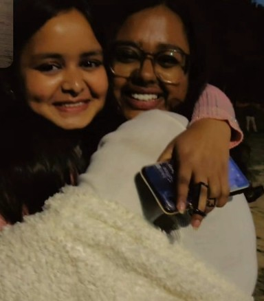
You're quiet, but never weak. Determined, but never hard. There is something about the way you carry yourself that feels like a quiet kind of strength — and I think that is one of the things I've always admired about you.
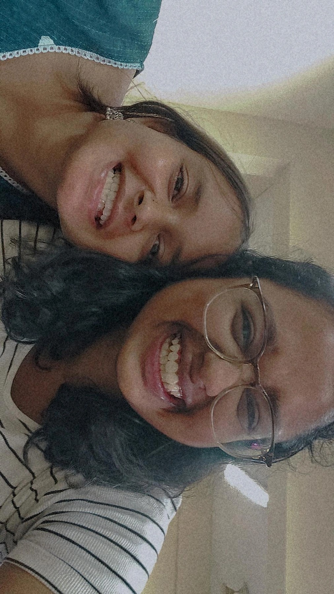
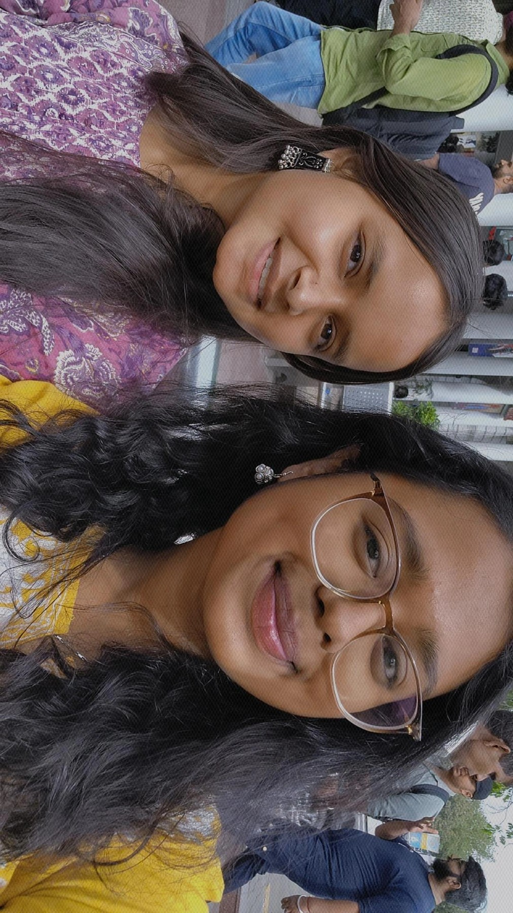
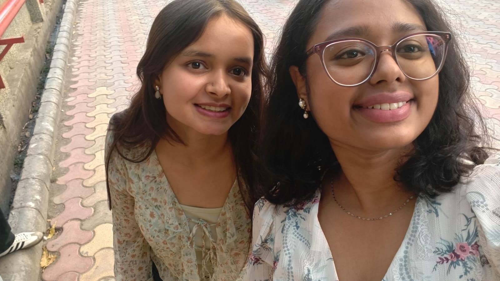
Honestly, a lot of it is just the little walks and little chats. Nothing cinematic. Just us wandering around campus, talking about whatever was happening that day, and somehow making the day feel lighter.
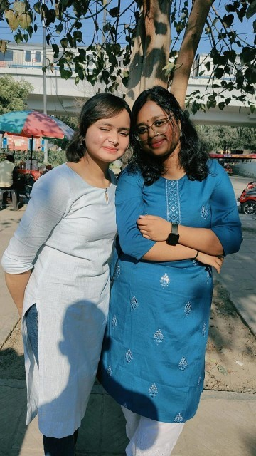
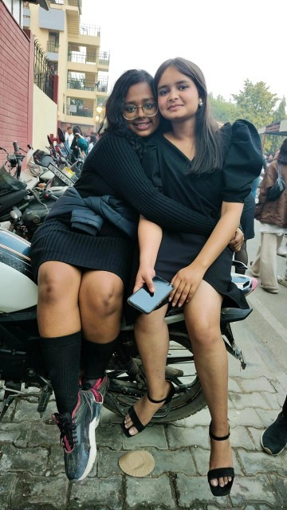
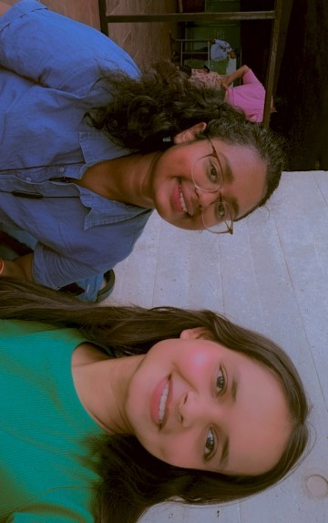
three years, somehow
Not all at once. Not with a grand announcement. Just one ordinary day after another.
Two girls in first year, learning college, learning each other, and slowly turning “7.40?” into a very real part of the routine.
More walks. More conversations. More tears, laughter, fights, celebrations and the quiet certainty that you were becoming someone I could tell things to.
Three years later, I don't really remember when the friendship crossed that invisible line. I just know college would feel very different without you in it.
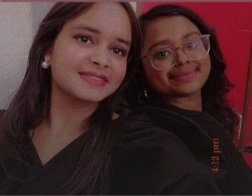
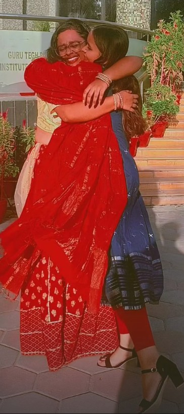
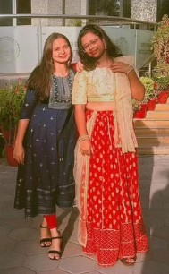
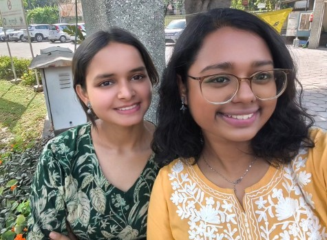
the plot twist
...ended up becoming one of the best people I met in college.
Funny, isn't it? Sometimes the people who become essential don't arrive with fireworks. They just keep showing up. And one day you look around and realise they've become part of the architecture of your life.
the metro station
We cried at the metro station because our emotions had simply overflowed. To be honest, that was the first time I ever saw you cry.
And to this day, it hurts my heart a little.
You know how sometimes you look at a person and think, this person should never have their heart broken?
You are one of those people for me.
So soar high. Become great. Become strong. But remain as soft as you are.
Show the world that grace and strength can exist in the same person — and teach them all, just as you taught me.
Some memories stay with us because they hurt. Some stay because they made us who we are. I think that one did both. ♡
Three years of friendship. A thousand tiny memories.
And a whole lot of college left to remember.
click the envelope ♡